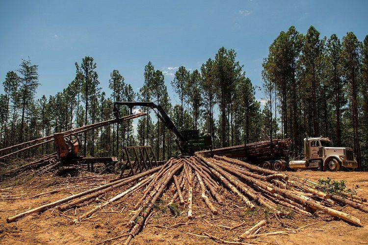

Deforestation is the purposeful clearing of forested land. Throughout history and into modern times, forests have been razed to make space for agriculture and animal grazing, and to obtain wood for fuel, manufacturing, and construction. Deforestation has greatly altered landscapes around the world. About 2,000 years ago, 80 percent of Western Europe was forested; today the figure is 34 percent. In North America, about half of the forests in the eastern part of the continent were cut down from the 1600s to the 1870s for timber and agriculture. China has lost great expanses of its forests over the past 4,000 years and now just over 20 percent of it is forested. Much of Earth’s farmland was once forests.
Today, the greatest amount of deforestation is occurring in tropical rainforests, aided by extensive road construction into regions that were once almost inaccessible. Building or upgrading roads into forests makes them more accessible for exploitation. Slash-and-burn agriculture is a big contributor to deforestation in the tropics. With this agricultural method, farmers burn large swaths of forest, allowing the ash to fertilize the land for crops. The land is only fertile for a few years, however, after which the farmers move on to repeat the process elsewhere. Tropical forests are also cleared to make way for logging, cattle ranching, and oil palm and rubber tree plantations.
Deforestation can result in more carbon dioxide being released into the atmosphere. That is because trees take in carbon dioxide from the air for photosynthesis, and carbon is locked chemically in their wood. When trees are burned, this carbon returns to the atmosphere as carbon dioxide. With fewer trees around to take in the carbon dioxide, this greenhouse gas accumulates in the atmosphere and accelerates global warming. Deforestation also threatens the world’s biodiversity. Tropical forests are home to great numbers of animal and plant species. When forests are logged or burned, it can drive many of those species into extinction. Some scientists say we are already in the midst of a mass-extinction episode.
More immediately, the loss of trees from a forest can leave soil more prone to erosion. This causes the remaining plants to become more vulnerable to fire as the forest shifts from being a closed, moist environment to an open, dry one. While deforestation can be permanent, this is not always the case. In North America, for example, forests in many areas are returning thanks to conservation efforts.